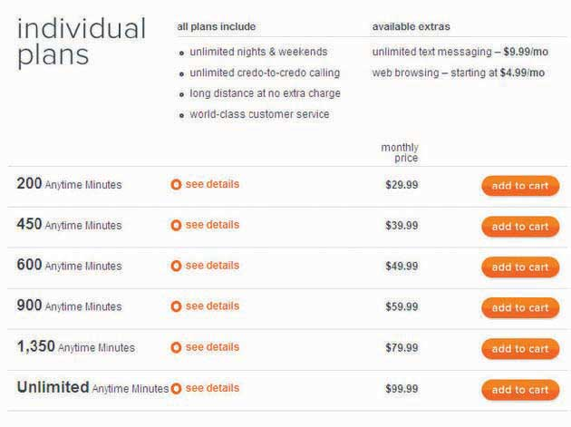

After studying this section, students should be able to do the following:
Marketing: Typically when people hear the word marketing they think it means either advertising or selling. Others even think of it in a very negative way, as in, “That’s not really true. It’s just marketing.” In reality, marketing relates to both advertising and selling, but it’s not the same thing as either term. And let’s hope the second perspective isn’t true!
According to the American Marketing Association, “MarketingThe processes involved in creating, communicating, delivering, and exchanging offerings that have value. is the activity, set of institutions, and processes for creating, communicating, delivering and exchanging offerings that have value for customers, clients, partners, and society at large.”MarketingPower.com, “Marketing Definitions,” http://www.marketingpower.com/content4620.php (accessed April 17, 2008). That’s a pretty long-winded definition—but when you boil it down, it basically means that marketing is about all parties to a transaction walking away with something of value. Thus, marketers ideally try to satisfy everyone involved in the process, including those who make a product or promote an idea, those who advertise it, and those who purchase it or endorse it.
And the process is in many ways the same regardless of what the transaction is about—whether it’s a can of peas, a reggae concert, a blood drive, or a political campaign. In each case marketing is about satisfying needs. A needThe difference between a consumer’s actual state and some ideal or desired state. is the difference between a consumer’s actual state and some ideal or desired state. For example, if you drive a junky old car but you crave a hot ride, you have a need. If you know that a poor child in a third world country goes without proper food and you believe she should have access to healthy meals, you also have a need.
Most successful organizations today practice the marketing conceptThe process in which marketers first identify customers’ needs and then provide products or services that satisfy those needs.; marketers first identify customers’ needs and then provide products or services that satisfy those needs. A product delivers a benefitAnything that, when delivered, satisfies a need. when it satisfies a need. It probably won’t surprise you to learn that a lot of advertising tries to show consumers just how a product, service, or idea will do a good job of satisfying a need as it informs, persuades, or reminds.
Advertising is one important element in the marketer’s strategic toolbox. We call this toolbox the marketing mixThe tools the organization uses to create a desired response among a set of predefined consumers., which consists of the tools the organization uses to create a desired response among a set of predefined consumers. These tools include the product itself, the price of the product, the promotional activities that introduce it to consumers, and the places where it is available. We commonly refer to the elements of the marketing mix as the Four PsProduct, place, price, and promotion.: product, place, price, and promotion. The word mix reminds us that no single marketing activity is sufficient to accomplish the organization’s objectives; the key is to blend these together to create the desired impact. Let’s take a closer look at each of these four basic tools.
ProductA good, service, or idea that can be marketed., broadly defined, is a good, service, or idea. Sometimes the “product” can even be a person, such as a political candidate. SS+K’s work for (now President) Barack Obama certainly illustrates that idea. A product may consist of a single item, such as a printer, or a portfolio of interrelated items such as a package that includes a printer, specialized software, and online photo-sharing services.
It’s important to remember that the product you sell is a lot more than the physical item the company manufactures. We also have to think about augmented productsAspects of the product or service that help the consumer to use the core product, such as a warranty or an instruction book.; aspects of the product or service that help the consumer to use the core productThe basic good or service that is being sold.. These augmented products include components like a warranty for a vacuum cleaner, the soft drinks an airline serves, and the instructions (maybe even written in English) that come with your new camera.
Figure 2.6
CREDO Mobile, an SS+K client, includes a distinctive logo and design on its phones as part of its product strategy. This design communicates the unique offering of CREDO Mobile from other standard phones.
PackagingAn augmented product that provides value in terms of storing a product and allowing it to be transported safely and that makes a product visually distinctive to customers. is a very important augmented product; in addition to the value it provides in terms of storing a product and allowing it to be transported safely, packaging fulfills the important role of making a product visually distinctive to customers. “Consumers are looking for what’s new,” said Kimberly Drosos, director for package development at Unilever North America. “They say, ‘What else do you have for me? That was nice last year, but I want the packaging to be refreshing.’” Unilever’s innovative packaging includes Axe shower gel bottles shaped like video-game joysticks.
PlaceWhere a product is offered for sale, e.g., in a local grocery store, a “big box” store, or a vending machine. Marketing strives to make an offering available at a time and location desirable to the customer. refers to where you offer your product for sale, whether it’s at your local grocery store, at a big discounter like Wal-Mart, or at a vending machine in your dorm. A key to successful marketing is to make your offering available at a time and location that are desirable to the customer.
Every product requires a channel of distributionA series of firms or individuals that facilitate the movement of the product from the producer to the final consumer.—a series of firms or individuals that facilitate the movement of the product from the producer to the final consumer. At minimum, a channel of distribution consists of a producer and the customer. This short producer-to-consumer channel is called a direct channelA channel of distribution consisting of a producer and the customer. because the consumer buys directly from the producer. For example, if you buy a peach from a local farmer, you’re using a direct channel. Similarly, when you buy a shirt from the Eddie Bauer catalog or Web site, you’re buying direct.
An indirect channelA channel of distribution that includes one or more intermediaries, such as wholesalers, agents, brokers, or retailers., by contrast, includes one or more intermediaries—such as wholesalers, agents, brokers, or retailers—who help move the product from the manufacturer to the consumer. For example, a farmer in New Zealand may sell apples to a wholesalerA “middleman” in the distribution chain; a merchant who buys goods and sells them to other businesses, not to consumers., who in turn sells the apples to several supermarkets in North America. In this case, each supermarket acts as a retailerThe last point in the distribution chain; a merchant who sells to the final customer.—the last point in the distribution chain, which sells to the final customer.
Today, news is ubiquitous, and most people’s preferred mode of delivery no longer includes a bicycle and a strong throwing arm. On services like msnbc.com, the latest headlines greet us when we flip up our cell phones or pop open our laptops. It’s easy and fast to find coverage of the same story from a variety of sources and to tailor news supply from providers for the types of information we want to see. There are thousands of choices among online news sources, with hard copy newspapers competing against the online versions of themselves and losing. Additionally, aggregators further commodify online news information, lumping together “name brand” news and less pedigreed sources by topic. There is an increasingly thin layer of audience spread across the rapidly proliferating URLs of major and start-up news providers.
Follow Up: “Creative Destruction: An Exploratory Look at News on the Internet,” http://www.ksg.harvard.edu/presspol/carnegie_knight/creative_destruction_web.pdf.
PriceThe amount the consumer pays to acquire a product. is the amount that the consumer pays to acquire a product (but you knew that). Setting a price for a product involves a number of considerations. For example, the seller must decide upon a basis for pricing. Products may be priced by the unit (a single TV or computer), by volume (gasoline), by time of use (monthly cable TV or Internet service), by amount of use (utilities or cell phone minutes), or by performance (overnight versus two-day package delivery).
In addition to the list price, producers may offer discounts and allowances to its channel partners—the firms or individuals in its channel of distribution. The producer may offer each channel partner a different price if they buy in different quantities or if the deal includes cooperative advertisingStrategy in which two or more channel partners agree to promote a product jointly., where two or more channel partners agree to pitch in to promote a product. For example, a candy company and a grocery store might agree to share the cost of a Halloween newspaper circular that includes an advertisement featuring party ideas and coupons for trick-or-treaters.
Figure 2.7
CREDO Mobile pricing chart allows consumers to easily compare their offerings to competitors. The key distinction is that CREDO Mobile and their customers donate part of their bills and profits to progressive causes of their choice. Go to credomobile.com for more information.
For very expensive items, price may also include a payment period and credit terms. This allows consumers to purchase products, such as new cars, that they otherwise would be unable to afford. In some cases, a seller may offer credit incentives to encourage consumers to buy big-ticket items. For example, furniture stores frequently offer customers up to ninety days of free credit (zero percent financing) when they make large purchases such as a sofa or bedroom suite.
Last but definitely not least, the final P is for promotionAll the activities that inform and encourage consumers to buy a given product., which refers to all the activities that inform and encourage consumers to buy a given product. This includes print and broadcast ads, coupons, billboards, personal sales, and online sales. This P is so important that, believe it or not, entire textbooks have been written about it. By the way, you’re reading one now (but you knew that too).
We call a promotional effort aimed at the final customer a promotional pull strategyPromotional effort aimed at the final customer.. The goal is to convince the customers that they want a product, in order to create a “pull” demand in which the customer goes to a store and asks for the product by name. Stores that do not already carry the product may be motivated to carry it in order to satisfy customer demand. So, in this case the customer “pulls” the product through the channel.
Promotion can be targeted at distributors as well as customers. Manufacturers often develop programs designed to motivate channel members to stock certain products. Such a program is called a promotional push strategyPromotional programs designed to motivate channel members to stock certain products.. For example, a software manufacturer like TurboTax may propose a cooperative ad campaign with a software retailer such as Office Max, sharing the cost of an ad that says “Buy your TurboTax at Office Max.” Alternately, TurboTax may offer retailers introductory discounts on TurboTax products to encourage them to promote or prominently display TurboTax products in their stores. If TurboTax advertises these discounts in trade publications that office products store managers read, we call that trade advertisingA type of promotional push strategy; advertising by a manufacturer that aims to entice merchants to stock their product.. In this case the manufacturer tries to “push” its products through the channel down to the end consumer. Promotional push strategies are often less expensive than pull strategies, so a firm with a smaller promotional budget will likely pursue a push strategy.
Figure 2.8
A sales promotion is a time-based strategy to stimulate consumer demand for a product or service. SS+K’s client CREDO Mobile sponsored a promotion to entice customers to give up their current phone service and switch to CREDO. This is a pull strategy.
Marketers look not only at each of the four Ps individually, but also at the interaction of product, price, promotion, and place. They fine-tune and adjust each to meet the needs of the market and create the best outcome for the company. For example, a seller may lower the price of a product during a promotional event. Likewise, holding a special promotional event may affect place because the seller must supply stores with enough products to meet the demand that the promotion will stimulate. Finally, the promotion might affect the product’s packaging, such as bundling a shampoo with a free sample of conditioner.
A new experiment Microsoft Corporation is running illustrates how different elements of the marketing mix can work together. The company is testing a grocery cart–mounted console that helps shoppers find products in the store, then scan and pay for their items without waiting in the checkout line. As they shop, consumers will see video ads playing on these cart screens. But it gets better: Before they leave home, customers with a ShopRite loyalty card log into a Web site and type in their grocery lists. They go to the store and swipe their card on the cart, and the list appears. As they scan their purchases and put them in their cart, they get a running price tally, and their shopping list automatically checks off these items. The system also can sense where the cart is in the store so it can send ads to shoppers just when they wheel by certain key areas—for example, the cart might offer a discount on Lay’s potato chips at the exact moment they walk by the potato chip section.Jessica Mintz, “Cart Console Finds Grocery Items for You,” USA Today, http://www.usatoday.com/tech/news/techinnovations/2008-01-14-microsoft-shopping-carts_N.htm (accessed February 13, 2009). Price, product, promotion, and place—all in play.
The marketing process attempts to create value for all parties involved to satisfy everyone’s needs. Marketers use the marketing mix of product, price, place, and promotion to do this.